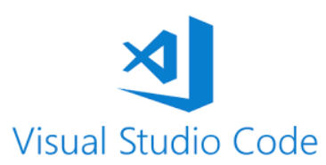

Reading, Organising and Writing Data with R
Learning outcome
- Read data from different sources.
- Organise the data according to the need for future analysis.
Artefacts
| Activities | Read R for Data Science 2017 Chapter 8 |
| Technical Work | Downloaded Visual Studio Code and try to build E-portfolio |
Reflections
Left & Right
I recently downloaded Visual Studio Code and began learning about creating an e-portfolio. This was my first experience building a website or e-portfolio I struggled with understanding how to structure the e-portfolio effectively. To seek guidance, I reached out to my professor, who provided helpful feedback. After receiving the advice, I updated the content and took time to choose a style for the e-portfolio that would create an appealing and professional page. I plan to present my e-portfolio in the upcoming lecture.
I felt uneasy and uncertain because web development was new to me, and I lacked experience in creating an e-portfolio. The process seemed overwhelming. However, reaching out to my professor for help was reassuring. I felt more confident and motivated after receiving his feedback, as it clarified what I needed to focus on. I felt a sense of accomplishment when I started seeing my progress in updating the e-portfolio. The positive aspect of this experience was that I learned the basics of using Visual Studio Code and began understanding how to create a simple web-based e-portfolio. On the downside, I also spent a lot of time trying to decide on design elements ( I have changed my template for some reason), which delayed progress on the content itself.
Meeting note
- Python is allowed
- Focus on Linear Regression, No need for classification.
- Find correlation of 2 variables.
- Ensure that the model works with any dataset
Professional Skills Matrix
| Competency | Skill | Price | Evidence |
|---|---|---|---|
| Technical skills | Web development | developing | Learning how to build E-portfolio |
| Communication | Communication with tutor | Trained | Reached out to the professor for guidance on e-portfolio structure. |
| Problem-Solving | E-portfolio | Developing | Leanring how to use Vistual Studio Code |
Action Plan
Continue working on the e-portfolio to add more content and experiment with different features. Continuing working on R for different type of charts.